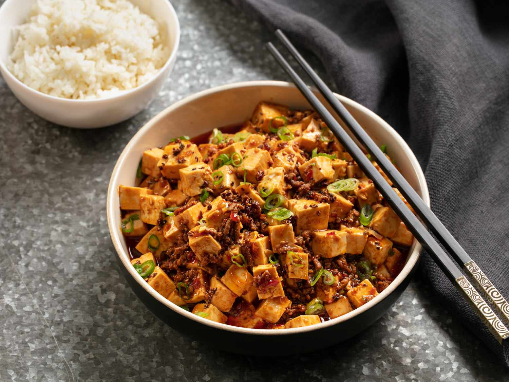

Select Recipe
Double Chocolate Cookies
Origin: Michigan, Source: Family Recipe, Category: Dessert
My daughter learned to make these cookies at a baking camp at Zingermanns and has tweaked the recipe to fit the taste buds of her siblings. They are extremely sugary so the salt helps to balance it. Note, these cookies are best eaten very quickly.
Recipe Ingredients
- 1.Unsalted butter
- 2.Granulated Sugar
- 3.Packed light or dark brown sugar
- 4.Large egg
- 5.Pure vanilla extract
- 6.Semi-sweet chocolate chunks (melted)
- 7.All-purpose flour
- 8.Natural unsweetened cocoa powder
- 9.Baking soda
- 10.Salt
- 11.Semi-sweet chocolate chunks
Recipe Steps
- 1.In a mixing bowl cream together the butter, granulated sugar, and brown sugar
- 2.Add the egg and vanilla extract and beat well
- 3.Add the melted chocolate
- 4.In a separate bowl combine the flour, baking soda, cocoa powder and salt
- 5.Combine the wet and dry ingredients
- 6.Add the unmelted chocolate chunks.
- 7.Form 15 cookies and place on a baking sheet.
- 8.Cook for 12 to 13 minutes at 350 degrees.
Additional Food images


Mapo Tofu
Origin: China, Source: Family Recipe, Category: Main Dish Need something smooth and spicy? Mapo Tofu is a simple tofu dish from Sichuan China. It's great over rice and easy to prep/save for college students! This recipe is for people who want to try authentic Chinese food but do not have Sichuan spices to use.
Recipe Ingredients
- 1.1 pack silken tofu
- 2.2 green onions, thinly sliced
- 3.1/2 lb ground pork
- 4.1 pack mapo tofu sauce (store bought)
- 5.3 cloves minced garlic
- 6.soy sauce to taste
- 7.2 tbsp cooking oil
Recipe Steps
- 1.Brown pork in wok with oil for 4-5 minutes
- 2.Add sauce and garlic, stir fry for 2 minutes
- 3.Add tofu and mix lightly as to not break up the tofu too much, until heated through
- 4.Add soy sauce, green onion and dish up
Additional Food images


Karen Koo and Patrick Zhu
The Perfect Burger
Origin: USA, Source: Bobby Flay, Category: Lunch/DinnerIn Bobby Flay's perfect burger recipe, the culinary maestro elevates the art of burger crafting to new heights. With a harmonious blend of premium ground beef, meticulously selected seasonings, and the expert touch of grilling mastery, each bite promises a symphony of flavors that transcends the ordinary, making it a gastronomic experience that lingers in the memory long after the last savory morsel is savored.
Recipe Ingredients
- 1.1 1/2 pounds ground chuck (80 percent lean) or ground turkey (90 percent lean)
- 2.Kosher salt and freshly ground black pepper
- 3.1 1/2 tablespoons canola oil
- 4.4 slices cheese (optional)
- 5.4 hamburger buns, split; toasted, if desired
Recipe Steps
- 1.Divide the meat into 4 equal portions (about 6 ounces each). Form each portion loosely into a 3/4-inch-thick burger and make a deep depression in the center with your thumb. Season both sides of each burger with salt and pepper.
- 2.Heat a gas grill to high or heat coals in a charcoal grill until they glow bright orange and ash over. Brush the burgers with the oil. Grill the burgers until golden brown and slightly charred on the first side, about 3 minutes for beef and 5 minutes for turkey. Flip over the burgers. Cook beef burgers until golden brown and slightly charred on the second side, 4 minutes for medium rare (3 minutes if topping with cheese; see step 3) or until cooked to desired degree of doneness. Cook turkey burgers until cooked throughout, about 5 minutes on the second side.
- 3.Add the cheese, if using, to the tops of the burgers during the last minute of cooking and top with a basting cover, close the grill cover, or tent the burgers with aluminum foil to melt the cheese.
- 4.Sandwich the hot burgers between the buns and serve immediately.
Additional Food images
Dalgona Coffee
Origin: South Korea, Source: Jung Il-Woo, Category: Coffee
Dalgona Coffee, a viral sensation that took the internet by storm, is a delightful and indulgent beverage originating from South Korea. This frothy and creamy coffee creation involves whipping together equal parts of instant coffee, sugar, and hot water until a thick, velvety foam forms. As it gracefully crowns a glass of milk or your preferred dairy alternative, Dalgona Coffee not only tantalizes the taste buds with its rich and robust coffee flavor but also captivates with its visually striking, cloud-like appearance. The trend's global popularity attests to its simple yet magical transformation of humble ingredients into a luxurious and Instagram-worthy coffee experience that has become a beloved ritual for coffee enthusiasts worldwide.
Recipe Ingredients
- 1.2 tbsp. granulated sugar
- 2.2 tbsp. instant coffee
- 3.2 tbsp. cold water
- 4.Ice (optional)
- 5.Milk (or milk alternative)
Recipe Steps
- 1.In a medium bowl, combine sugar, coffee, and water. Using a hand mixer or a whisk, vigorously whisk until mixture turns silky smooth and shiny, then continue whisking until it thickens and holds its lofty, foamy shape. (If whisking by hand, it will take 8 to 12 minutes to get to optimal fluffiness.)
- 2.Fill a glass most of the way full with ice and milk, then dollop and swirl the whipped coffee mixture on top, mixing before drinking, if desired.
Additional Food images

Korean Cucumber Salad
Origin: South Korea, Source: Unknown, Category: Appetiezer
Korean Cucumber Salad, known as "Oi Muchim," is a refreshing and vibrant side dish that effortlessly captures the essence of Korean cuisine. Sliced cucumbers, meticulously arranged in delicate ribbons, serve as the crisp and hydrating base for this salad. The cucumbers are then bathed in a zesty dressing crafted from a harmonious blend of soy sauce, rice vinegar, sesame oil, and a hint of sugar.
Recipe Ingredients
- 1.1 cucumber (Japanese, English, Persian, Pickling are all good) about 1 1/2 cup sliced for 1 cucumber
- 2.1 Tbsp soy sauce (Jin Ganjang)
- 3.2 Tbsp rice vinegar
- 4.1 Tbsp sugar
- 5.1/2 tsp Korean red chili powder
- 6.1/4 tsp sesame seeds
- 7.2 green onions , chopped
Recipe Steps
- 1.Slice cucumbers into thin slices. Around 1/8 inch (3 mm).
- 2.Mix soy sauce, vinegar and sugar in a bowl. Pour soy vinegar into the bowl with cucumbers.
- 3.Mix soy sauce, vinegar and sugar in a bowl. Pour soy vinegar into the bowl with cucumbers.
- 4.Add chopped green onions and mix again.
- 5.Serve immediately for the most fresh and crunchy cucumber flavor. You can also let it sit for 10-15 minutes for the cucumbers to absorb the dressing.
Additional Food images